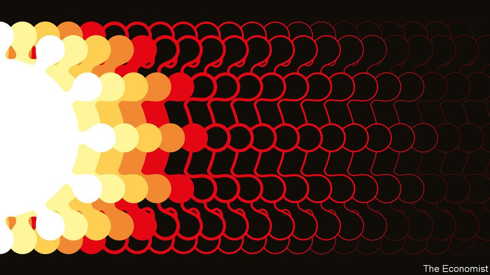

2021-07-13T15:57:29+00:00
【首文】疫情之后
与新冠肺炎的漫长告别
疫情远未结束，但其后遗症已经浮现
什么时候才是尽头？一年半了，新冠疫情蔓延到一个又一个国家。就当世人以为病毒已被打败的时候，新的变种又卷土重来，传染性更甚于前。然而，随着疫苗接种超过30亿剂次，后疫情时代的生活面貌正在浮现。现在有两件事已经明确无疑：疫情的最后阶段将漫长而痛苦；疫情过后的世界将截然不同。
本刊在近日发布了一个“正常化指数”来反映上述两个方面。该指数将疫情前的平均水平设定为100，追踪了50个国家（占全球人口76%）的航班、道路交通和零售等数据。今天该指数的分值为66，几乎是2020年4月的两倍。
不过许多国家仍深陷疫情之中。例如在指数中垫底、仅得27分的马来西亚，该国近来遭遇新一波疫情，致死率是1月那一波的六倍。造成这种情况的主要原因是疫苗接种仍然不足。
在遭受一波疫情致命打击的撒哈拉以南非洲地区，12岁以上人口中只有2.4%接种了第一剂疫苗。即使是疫苗充足的美国，在密西西比州和阿拉巴马州也只有大约30%的人获得完全保护。尽管全球今年将生产约110亿剂疫苗，但全部完成注射这些疫苗还需要好几个月的时间，如果富裕国家为了以防万一而囤积疫苗，时间还会更久。
疫苗接种不足的问题因为病毒新变种的出现而更加严峻。德尔塔毒株首先在印度发现，传染性是来自武汉的毒株的两到三倍。其传播速度之快，有时医院病床迅速爆满，医护人手不足（有时连氧气都供应不及），即使在接种率达到30%的地区也是如此。如今，病毒变种甚至在已经接种的人群中蔓延。到目前为止，病毒的突变尚未削弱疫苗防止几乎所有重症和死亡的效力。但下一次突变就说不定了。
所有这些都不能改变疫情终将消退的事实，即使病毒本身很可能会继续存活下去。对于那些有幸完全接种疫苗以及可以获得新疗法的人来说，新冠肺炎已经很快成为一种非致命性疾病。在传播的病毒以德尔塔变种为主的英国，目前感染后的致死率约为0.1%，类似于季节性流感，属于危险但可控的程度。如果需要为某个变种重新开发疫苗，花的时间也不会太长。
然而，随着富裕国家的疫苗和治疗手段日益丰富，对穷国民众因供应匮乏而难逃一死的愤怒也会与日俱增。这将引发富国与世界其余地区之间的矛盾。旅行禁令将让这两个世界彼此隔离。
航班终将恢复，但其他行为的变化会继续下去。有些会有深远的影响。以美国为例，其经济的景气程度在3月已超过疫情前水平，但在我们的指数中仍只得到73分——部分原因是大城市变得冷清，更多人在家工作。
目前看来，新冠疫情的遗留影响仍将遵循以往大流行病的模式。耶鲁大学的尼古拉斯·克里斯塔基斯（Nicholas Christakis）指出了三个转变：集体威胁促使国家权力扩增；日常生活被颠覆导致人们寻找生活的意义；疫病肆虐时面对死亡的威胁人人谨小慎微，待它消退后人们又会格外胆大妄为。每一种转变都将以自己的方式深刻地影响社会。
在封锁期间，富裕国家的国民闭门不出，政府也紧锁国门。在疫情中，政府是信息的主要渠道、规则的制定者、现金的来源，最后也是疫苗的提供者。据非常粗略的计算，在富裕国家，政府出资填补了90%的产出损失。限制公民自由的政客发现大部分民众都表示拥护，连他们自己都略感意外。
关于封锁到底是否“值得”，学术界正在激烈争论。但作为疫情后遗症的大政府现象已经清晰可见。看看拜登政府的支出计划就知道了。无论问题是什么——不平等、经济增长缓慢、供应链安全——更大、更积极的政府似乎是首选的解决方案。
还有证据表明，人们正在重新寻找意义。这进一步加强了左翼和右翼都向身份政治转变的趋势，但影响不止于此。民调机构皮尤研究中心（Pew）的调查发现，在意大利和荷兰，约有五分之一的受访者表示这次疫情让他们的国家变得更信奉宗教。在西班牙和加拿大，约五分之二的人表示家庭关系变得更紧密了。
休闲娱乐也受到了影响。人们表示闲暇时间多了15%。在英国，年轻女性看书的时间增加了50%。各种小说处女作如雪片般飞向文学经纪人。其中一些新现象会逐渐消失，媒体公司就担心会迎来“注意力衰退”。但有些会持续下去。
例如，人们可能决定不再回到疫情前辛苦乏味的工作岗位，而劳动力市场吃紧可能会让他们如愿以偿。在英国，报读医学院的人数在2020年上升了21%。在美国，新成立公司数量已达到自2004年有记录以来的最高水平。调查显示，可以在家工作的美国人当中，有三分之一希望一周五天都能在家办公。一些老板命令员工回到办公室，也有老板尝试想些办法吸引他们回去。
大难不死，百无禁忌
目前还不清楚风险偏好是否会反弹。一般来说，从一种危及生命的疾病中幸存下来，你可能就会自认是幸运儿，对一切都无所顾忌。一个世纪前爆发的西班牙流感过后的几年里，几乎在每个领域都迸发出对刺激的渴求，从纵欲、艺术，到对速度的狂热追求。这一次，新的前沿领域可能是太空旅行、基因工程、人工智能和增强现实。
即使在新冠病毒出现之前，数字革命、气候变化和中国崛起似乎已经在终结二战后西方主导的秩序。疫情将加速这一转变。
2021-07-13T15:57:29+00:00
After the disease
The long goodbye to covid-19
The pandemic is still far from over, but glimpses of its legacy are emerging
WHEN WILL it end? For a year and a half, covid-19 has gripped one country after another. Just when you think the virus is beaten, a new variant comes storming back, more infectious than the last. And yet, as the number of vaccinations passes 3bn, glimpses of post-covid life are emerging. Already, two things are clear: that the last phase of the pandemic will be drawn-out and painful; and that covid-19 will leave behind a different world.
This week The Economist publishes a normalcy index, which reflects both these realities. Taking the pre-pandemic average as 100, it tracks such things as flights, traffic and retailing across 50 countries comprising 76% of Earth’s population. Today it stands at 66, almost double the level in April 2020.
Yet the ravages of covid-19 are still apparent in many countries. Consider our index’s worst performer, Malaysia, which is suffering a wave of infections six times more deadly than the surge in January and scores just 27. The main reason for this is that vaccination remains incomplete.
In sub-Saharan Africa, suffering a lethal outbreak, just 2.4% of the population aged over 12 has had a single dose. Even in America, where vaccines are plentiful, only around 30% of Mississippians and Alabamans are fully protected. Although the world is set to produce around 11bn doses of vaccine this year, it will be months before all those jabs find arms, and longer if rich countries hog doses on the off-chance that they may need them.
The lack of vaccination is aggravated by new variants. Delta, first spotted in India, is two to three times more infectious than the virus that came out of Wuhan. Cases spread so fast that hospitals can rapidly run out of beds and medical staff (and sometimes oxygen), even in places where 30% of people have had jabs. Today’s variants are spreading even among the vaccinated. No mutation has yet put a dent in the vaccines’ ability to prevent almost all severe disease and death. But the next one might.
None of this alters the fact that the pandemic will eventually abate, even though the virus itself is likely to survive. For those fortunate enough to have been fully vaccinated and to have access to new treatments, covid-19 is already fast becoming a non-lethal disease. In Britain, where Delta is dominant, the fatality rate if you become infected is now about 0.1%, similar to seasonal flu: a danger, but a manageable one. If a variant required a reformulated vaccine, it would not take long to create.
However, as vaccines and treatments become more plentiful in rich countries, so will anger at seeing people in poor ones die for want of supplies. That will cause friction between rich countries and the rest. Travel bans will keep the two worlds apart.
Eventually flights will resume, but other changes in behaviour will last. Some will be profound. Take America, where the booming economy surged past its pre-pandemic level back in March, but which still scores only 73 on our index—partly because big cities are quieter, and more people work from home.
So far it looks as if the legacy of covid-19 will follow the pattern set by past pandemics. Nicholas Christakis of Yale University identifies three shifts: the collective threat prompts a growth in state power; the overturning of everyday life leads to a search for meaning; and the closeness of death which brings caution while the disease rages, spurs audacity when it has passed. Each will mark society in its own way.
When people in rich countries retreated into their houses during lockdowns, the state barricaded itself in with them. During the pandemic governments have been the main channel for information, the setters of rules, a source of cash and, ultimately, providers of vaccines. Very roughly, rich-country governments paid out 90 cents for every dollar of lost output. Slightly to their own amazement, politicians who restricted civil liberties found that most of their citizens applauded.
There is a vigorous academic debate about whether lockdowns were “worth it”. But the big-government legacy of the pandemic is already on display. Just look at the spending plans of the Biden administration. Whatever the problem—inequality, sluggish economic growth, the security of supply chains—a bigger, more activist government seems to be the preferred solution.
There is also evidence of a renewed search for meaning. This is reinforcing the shift towards identity politics on both the right and the left, but it goes deeper than that. Roughly one in five people in Italy and the Netherlands told Pew, a pollster, that the pandemic had made their countries more religious. In Spain and Canada about two in five said family ties had become stronger.
Leisure has been affected, too. People say they have had 15% more time on their hands. In Britain young women spent 50% longer with their nose in a book. Literary agents have been swamped with first novels. Some of this will fade: media firms fear an “attention recession”. But some changes will stick.
For example, people may decide they want to escape pre-pandemic drudgery at work, and tight labour markets may help them. In Britain applications to medical school were up by 21% in 2020. In America business creation has been its highest since records began in 2004. One in three Americans who can work from home wants to do so five days a week, according to surveys. Some bosses are ordering people into the office; others are trying to entice them in.
Those who don’t die roll the dice
It is still unclear whether the appetite for risk is about to rebound. In principle, if you survive a life-threatening disease, you may count yourself as one of the lucky ones and the devil may care. In the years after the Spanish flu a century ago, a hunger for excitement burst onto the scene in every sphere, from sexual licence to the arts to the craze for speed. This time the new frontiers could range from space travel to genetic engineering, artificial intelligence and enhanced reality.
Even before the coronavirus came along, the digital revolution, climate change and China’s rise seemed to be bringing the post-second-world-war, Western-led order to an end. The pandemic will hasten the transformation. ■
2021-07-13T15:57:29+00:00
【首文】疫情之後
與新冠肺炎的漫長告別
疫情遠未結束，但其後遺症已經浮現
什麼時候才是盡頭？一年半了，新冠疫情蔓延到一個又一個國家。就當世人以為病毒已被打敗的時候，新的變種又捲土重來，傳染性更甚於前。然而，隨着疫苗接種超過30億劑次，後疫情時代的生活面貌正在浮現。現在有兩件事已經明確無疑：疫情的最後階段將漫長而痛苦；疫情過後的世界將截然不同。
本刊在近日發布了一個“正常化指數”來反映上述兩個方面。該指數將疫情前的平均水平設定為100，追蹤了50個國家（佔全球人口76%）的航班、道路交通和零售等數據。今天該指數的分值為66，幾乎是2020年4月的兩倍。
不過許多國家仍深陷疫情之中。例如在指數中墊底、僅得27分的馬來西亞，該國近來遭遇新一波疫情，致死率是1月那一波的六倍。造成這種情況的主要原因是疫苗接種仍然不足。
在遭受一波疫情致命打擊的撒哈拉以南非洲地區，12歲以上人口中只有2.4%接種了第一劑疫苗。即使是疫苗充足的美國，在密西西比州和阿拉巴馬州也只有大約30%的人獲得完全保護。儘管全球今年將生產約110億劑疫苗，但全部完成注射這些疫苗還需要好幾個月的時間，如果富裕國家為了以防萬一而囤積疫苗，時間還會更久。
疫苗接種不足的問題因為病毒新變種的出現而更加嚴峻。德爾塔毒株首先在印度發現，傳染性是來自武漢的毒株的兩到三倍。其傳播速度之快，有時醫院病床迅速爆滿，醫護人手不足（有時連氧氣都供應不及），即使在接種率達到30%的地區也是如此。如今，病毒變種甚至在已經接種的人群中蔓延。到目前為止，病毒的突變尚未削弱疫苗防止幾乎所有重症和死亡的效力。但下一次突變就說不定了。
所有這些都不能改變疫情終將消退的事實，即使病毒本身很可能會繼續存活下去。對於那些有幸完全接種疫苗以及可以獲得新療法的人來說，新冠肺炎已經很快成為一種非致命性疾病。在傳播的病毒以德爾塔變種為主的英國，目前感染後的致死率約為0.1%，類似於季節性流感，屬於危險但可控的程度。如果需要為某個變種重新開發疫苗，花的時間也不會太長。
然而，隨着富裕國家的疫苗和治療手段日益豐富，對窮國民眾因供應匱乏而難逃一死的憤怒也會與日俱增。這將引發富國與世界其餘地區之間的矛盾。旅行禁令將讓這兩個世界彼此隔離。
航班終將恢復，但其他行為的變化會繼續下去。有些會有深遠的影響。以美國為例，其經濟的景氣程度在3月已超過疫情前水平，但在我們的指數中仍只得到73分——部分原因是大城市變得冷清，更多人在家工作。
目前看來，新冠疫情的遺留影響仍將遵循以往大流行病的模式。耶魯大學的尼古拉斯·克里斯塔基斯（Nicholas Christakis）指出了三個轉變：集體威脅促使國家權力擴增；日常生活被顛覆導致人們尋找生活的意義；疫病肆虐時面對死亡的威脅人人謹小慎微，待它消退後人們又會格外膽大妄為。每一種轉變都將以自己的方式深刻地影響社會。
在封鎖期間，富裕國家的國民閉門不出，政府也緊鎖國門。在疫情中，政府是信息的主要渠道、規則的制定者、現金的來源，最後也是疫苗的提供者。據非常粗略的計算，在富裕國家，政府出資填補了90%的產出損失。限制公民自由的政客發現大部分民眾都表示擁護，連他們自己都略感意外。
關於封鎖到底是否“值得”，學術界正在激烈爭論。但作為疫情後遺症的大政府現象已經清晰可見。看看拜登政府的支出計劃就知道了。無論問題是什麼——不平等、經濟增長緩慢、供應鏈安全——更大、更積極的政府似乎是首選的解決方案。
還有證據表明，人們正在重新尋找意義。這進一步加強了左翼和右翼都向身份政治轉變的趨勢，但影響不止於此。民調機構皮尤研究中心（Pew）的調查發現，在意大利和荷蘭，約有五分之一的受訪者表示這次疫情讓他們的國家變得更信奉宗教。在西班牙和加拿大，約五分之二的人表示家庭關係變得更緊密了。
休閑娛樂也受到了影響。人們表示閑暇時間多了15%。在英國，年輕女性看書的時間增加了50%。各種小說處女作如雪片般飛向文學經紀人。其中一些新現象會逐漸消失，媒體公司就擔心會迎來“注意力衰退”。但有些會持續下去。
例如，人們可能決定不再回到疫情前辛苦乏味的工作崗位，而勞動力市場吃緊可能會讓他們如願以償。在英國，報讀醫學院的人數在2020年上升了21%。在美國，新成立公司數量已達到自2004年有記錄以來的最高水平。調查顯示，可以在家工作的美國人當中，有三分之一希望一周五天都能在家辦公。一些老闆命令員工回到辦公室，也有老闆嘗試想些辦法吸引他們回去。
大難不死，百無禁忌
目前還不清楚風險偏好是否會反彈。一般來說，從一種危及生命的疾病中倖存下來，你可能就會自認是幸運兒，對一切都無所顧忌。一個世紀前爆發的西班牙流感過後的幾年裡，幾乎在每個領域都迸發出對刺激的渴求，從縱慾、藝術，到對速度的狂熱追求。這一次，新的前沿領域可能是太空旅行、基因工程、人工智能和增強現實。
即使在新冠病毒出現之前，數字革命、氣候變化和中國崛起似乎已經在終結二戰後西方主導的秩序。疫情將加速這一轉變。